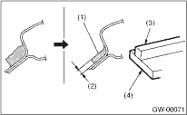
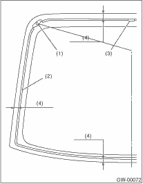
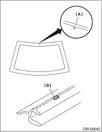
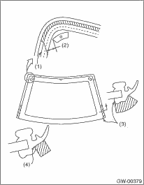
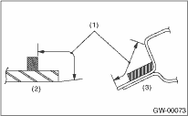
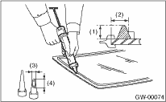
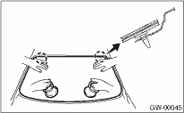

1. Clean the external circumference of windshield glass with alcohol or white gasoline.
2. Remove the adhesive layer on the body using cutter knife to obtain smooth face of 2 mm (0.08 in) thick.
CAUTION:
Be careful not to damage the body and paint surface.

|
(1) |
Adhesive |
|
(2) |
2 mm (0.08 in) |
|
(3) |
Dam rubber |
|
(4) |
Glass |
3. Clean the body with alcohol or white gasoline to eliminate cutting powder, dust and dirt completely from body.
4. Adhere the dam rubber to the glass back surface.

|
(1) |
Locating pin |
|
(2) |
Dam rubber |
|
(3) |
Fastener |
|
(4) |
13 mm (0.51 in) |
5. Peel away the backing paper of the double-sided tape. Align the molding mark (B) with the notch (A), affix the molding to the entire circumference of the edge of the glass, and press uniformly.

6. Apply seal A and seal B to the back surface of the molding.

|
(1) |
End of the radius at the back surface lip |
|
(2) |
73 mm (2.87 in) |
|
(3) |
Standard position for application of seal A (edge) |
|
(4) |
Standard position for application of seal B (end of the radius at the lip) |
7. Apply the primer to the adhesive surface of glass using sponge.
Glass primer:
Dow Automotive
Betawipe VP04604 and Betaprime 5001
8. Apply the primer to the adhesive surface of body.
Painted surface primer:
Dow Automotive
Betaprime 5402
NOTE:
• Primer once attached to the painted surface of the body and the internal trim is hard to wipe off. Mask the circumference of such area.
• Let primer dry for about ten minutes before installing the glass.
• Do not touch the surface coated with primer.

|
(1) |
Application of primer |
|
(2) |
Glass side |
|
(3) |
Body side |
9. Cut off the cartridge nozzle tip as shown and set it in sealant gun.

|
(1) |
10 — 13 mm (0.39 — 0.51 in) |
|
(2) |
13 mm (0.51 in) |
|
(3) |
10 mm (0.39 in) |
|
(4) |
15 mm (0.59 in) |
10. Apply adhesive to the glass end surface as shown.
Adhesive:
Dow Automotive
Gurit-ESSEX Betaseal 1502
11. Fit the locating pins using suction rubber cup to install windshield glass.

12. Lightly press the windshield glass for tight fit.
13. Make flush the adhesive surface jutted out using spatula.
14. After completion of all work, allow the vehicle to stand for about 24 hours.
NOTE:
• When door is opened/closed after glass is bonded, always lower the door glass first, and then open/close it carefully.
• Move the vehicle slowly.
• For minimum drying time and vehicle standing time before driving after bonding, follow instructions or instruction manual from the adhesive manufacturer.
15. After curing of adhesive, pour the water on external surface of vehicle to check that there are no water leaks.
NOTE:
When a vehicle is returned to the user, tell him or her that the vehicle should not be subjected to heavy impact for at least three days.
16. Install the cowl panel.